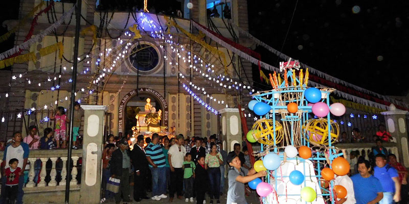

Los nombres de los municipios, fechas y patronos, a continuación.
| Municipio | Días | Santo Patrono |
|---|---|---|
| Barberena | 10 al 19 de marzo | San José |
| Casillas | 12 al 16 de enero | Cristo Negro de Esquipulas |
| Chiquimulilla | 30 de abril al 4 de mayo | Santa Cruz |
| Cuilapa | 24 al 25 de diciembre | Niño Dios |
| 1 al 8 de agosto | Señor de los Portentos | |
| Guazacapán | 6 al 11 de diciembre | Virgen de la Concepción |
| Nueva Santa Rosa | 12 al 18 de noviembre,(variable) | Cristo Rey |
| Oratorio | 28 de febrero al 3 de marzo | Sagrada Familia. |
| Pueblo Nueva Viñas | 18 al 23 de enero | Cristo Negro de Esquipulas |
| San Juan Tecuaco | 22 al 26 de enero | San Juan Bautista |
| San Rafael las Flores | 22 al 26 de octubre | San Rafael Arcángel |
| Santa Cruz Naranjo | 1 al 5 de mayo | Santa Cruz |
| Santa María Ixhuatán | 13 al 17 de diciembre | Virgen María |
| Santa Rosa de Lima | 27 al 31 de agosto | Santa Rosa de Lima |
| Taxisco | 12 al 18 de enero | Cristo Negro de Esquipulas |
